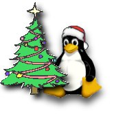

Noviembre realmente se siente como si fuera Navidad. Cuando llega
diciembre y la Navidad hay taaaanta gente en las tiendas corriendo
de un lado para otro para comprar regalos, y los anuncios estan por
todas partes, lo que no resulta ciertamente divertido, y resulta
incluso demasiado.
Por eso tenemos ahora la edición navideña de LinuxFocus, con las
crujientes galletas de coco y chocolate de LinuxFocus:
Ingredientes:
- 2 x 100g de chocolate con leche
- 1 taza shredded coconut
- 1 taza cornflakes
Preparación:
Fundir cuidadosamente el chocolate en un recipiente. Añadir
el coco al chocolate fundido, mezclándolo bien con una
cuchara. Despues, añadir los cornflakes, removiendo hasta
que los cornflakes se encuentre completamente rodeados de chocolate
y coco. Tomar dos cucharadas pequeñas de la mezcla, para hacer
pequeños bolas. Introducir estas bolas en el frigorífico
durante 15 minutos.
Más tarde podrás disfrutar de ellas mientras trabajes con
lo último en software para Linux o lees LinuxFocus.
Feliz Navidad!
 Gimp: Usando capas y sus máscaras
, por Yves Ceccone
Fuentes y motivos con GIMP
, por André Pascual
Atek Super Mini Optical Mouse
, por Guido Socher
Como usar el acaptador de USB ATEN UC-232A con Linux
, por Ingo Hoffmann
Todo un mundo nuevo: Una visita guiada con Tux por la tierra del pingüino, por Katja Socher
MOSIXVIEW, una herramienta grafica para manejar un cluster MOSIX, por Matthias Rechenburg
Nessus : otro ladrillo en el muro (de la seguridad), por Georges Tarbouriech
Páginas Amarillas 3: El lado del servidor, por Frédéric Raynal
Evitando agujeros de seguridad al desarrollar una aplicación - Parte 6 : Scripts CGI, por Frédéric Raynal, Christophe Blaess, Christophe Grenier
Analizando los ficheros de log de tus aplicaciones internet II - configurando los informes
, por Egon Willighagen
Gimp: Usando capas y sus máscaras
, por Yves Ceccone
Fuentes y motivos con GIMP
, por André Pascual
Atek Super Mini Optical Mouse
, por Guido Socher
How to use your ATEN UC-232A USB adapter with Linux
, por Ingo Hoffmann
Todo un mundo nuevo: Una visita guiada con Tux por la tierra del pingüino, por Katja Socher
MOSIXVIEW, una herramienta grafica para manejar un cluster MOSIX, por Matthias Rechenburg
Nessus : otro ladrillo en el muro (de la seguridad), por Georges Tarbouriech
Yellow Pages 3: The Server
Side, por Frédéric Raynal
Evitando agujeros de seguridad al desarrollar una aplicación - Parte 6 : Scripts CGI, por Frédéric Raynal, Christophe Blaess, Christophe Grenier
Analizando los ficheros de log de tus aplicaciones internet II - configurando los informes
, por Egon Willighagen
Gimp: Usando capas y sus máscaras
, por Yves Ceccone
Fuentes y motivos con GIMP
, por André Pascual
Atek Super Mini Optical Mouse
, por Guido Socher
Como usar el acaptador de USB ATEN UC-232A con Linux
, por Ingo Hoffmann
Todo un mundo nuevo: Una visita guiada con Tux por la tierra del pingüino, por Katja Socher
MOSIXVIEW, una herramienta grafica para manejar un cluster MOSIX, por Matthias Rechenburg
Nessus : otro ladrillo en el muro (de la seguridad), por Georges Tarbouriech
Páginas Amarillas 3: El lado del servidor, por Frédéric Raynal
Evitando agujeros de seguridad al desarrollar una aplicación - Parte 6 : Scripts CGI, por Frédéric Raynal, Christophe Blaess, Christophe Grenier
Analizando los ficheros de log de tus aplicaciones internet II - configurando los informes
, por Egon Willighagen
Gimp: Usando capas y sus máscaras
, por Yves Ceccone
Fuentes y motivos con GIMP
, por André Pascual
Atek Super Mini Optical Mouse
, por Guido Socher
How to use your ATEN UC-232A USB adapter with Linux
, por Ingo Hoffmann
Todo un mundo nuevo: Una visita guiada con Tux por la tierra del pingüino, por Katja Socher
MOSIXVIEW, una herramienta grafica para manejar un cluster MOSIX, por Matthias Rechenburg
Nessus : otro ladrillo en el muro (de la seguridad), por Georges Tarbouriech
Yellow Pages 3: The Server
Side, por Frédéric Raynal
Evitando agujeros de seguridad al desarrollar una aplicación - Parte 6 : Scripts CGI, por Frédéric Raynal, Christophe Blaess, Christophe Grenier
Analizando los ficheros de log de tus aplicaciones internet II - configurando los informes
, por Egon Willighagen
¿Cómo diseñar una homepage que pueda leer mucha
gente?
A la hora de diseñar tu homepage probablemente quieras que otra
gente pueda echarle un vistazo. HTML es un estandar, pero la forma en
que un navegador responde a un HTML imperfecto es algo que no está
estandarizado. Ese es el motivo por el que las páginas de diseño flojo
tienen un aspecto agradable en unos navegadores pero aparecen distorsionadas
y con aspectos extraños en otros. La mejor solución a esto es no mirar tu
página con un sólo navegador, y el pasarla por una herramienta de
verificación de HTML como
tidy
(pincha para llegar a la homepage):
con solo ejecutar tidy -e index.html
donde index.html es tu página web, obtendrás una lista con los errores,
si los hay. Tidy también puede corregir algunos de ellos de forma automática,
o indentar el código html de forma agradable. Todo esto se describe en la
página de manual que viene con tidy.
El W3C proporciona también una herramienta para chequeo en línea y un
servicio de validación en:
http://validator.w3.org/
En este caso no necesitas instalar nada. Simplemente pasar la URL de tu
homepage por este validador. Aunque es extremadamente estricto (a veces
demasiado), sirve como un muy buen indicador.
Los enlaces rotos son bastante molestos, y también hay herramientas para
chequear los links. Puedes encontar uno en la página citada anteriormente,
o puedes descargarte otro software de chequeo de links desde:
http://linkchecker.sourceforge.net.
Un chequeador muy rápido el blnkcheck. Puede comprobar varios millares de links por
segundo, pero sólo comprueba links relativos. blnkcheck es parte de un paquete llamado
webgrep (pincha para llegar a la homepage).
|
© 2001 LinuxFocus Página de contacto con LinuxFocus |